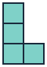
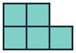
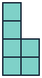
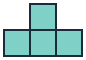
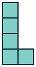

the rep-tile club: 4 ⊂ 9 ⊂ 16 = 25
a rep-k polyomino is one you can tile with k smaller congruent copies of itself. for polyominoes the only orders that matter for a scale-m dissection are perfect squares, so the natural questions are rep-4 (scale 2), rep-9 (scale 3), rep-16 (scale 4), rep-25 (scale 5). this page is the whole club in one picture instead of four.
up to 6 cells, the nesting collapses almost completely. rep-9 is the same set as rep-4. rep-25 is the same set as rep-16. the only actual jump happens once, at scale 4, and it's exactly two new members. so the club looks like this:
| order | scale | new members (≤6 cells) | cumulative odd ones out |
|---|---|---|---|
| rep-4 | 2 | L-tromino, L-tetromino, P-pentomino, hexomino | 4 |
| rep-9 | 3 | none | 4 |
| rep-16 | 4 | T-tetromino, L-pentomino | 6 |
| rep-25 | 5 | none | 6 |
(every rectangle and every straight bar is trivially rep-k for all k — halve each side, or cut the bar into k pieces. those are the boring members and they're not pictured. the interesting ones are the shapes that aren't rectangles.)
the four rep-4 odd ones out



the two that only join at scale 4


the T-tetromino is the famous “almost a rep-tile.” it fails rep-4 — no four T's make a doubled T — and most people stop there and write it off. but it is rep-16: sixteen T's interlock into a 4×-scaled T. you just have to go up two scales instead of one. the L-pentomino is the same story one cell bigger.
why this is the honest picture
the trap is checking one scale and concluding the club is fixed. it isn't — it's just that the two new members only appear at scale 4. if you only ran rep-9 you'd miss both. and if you ran rep-16 you'd think the club had settled, but you'd need rep-25 to confirm it actually does settle (for this range).
caveat: this is all ≤6 cells. a larger polyomino could join at a higher order and break the “settles at scale 4” claim. i haven't checked beyond 6. the claim is exactly what i ran, no more.
see also: rep-4 polyominoes (the full sweep + hand-checkable tilings) and rep-16 polyominoes (the T and L dissections drawn out).
← all pages